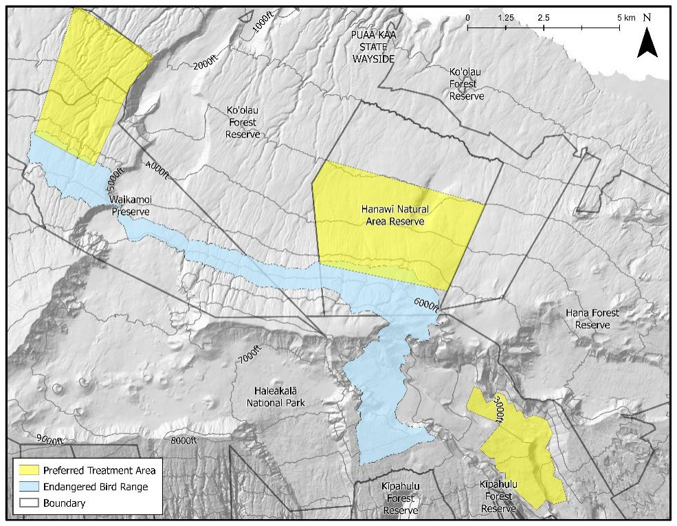
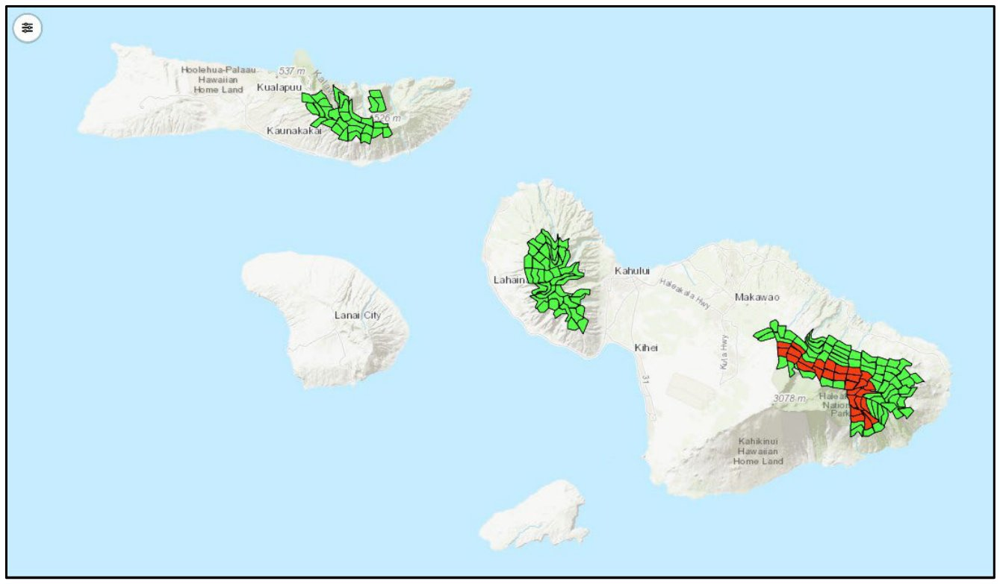

Why forest birds matter here
Forest birds had the lowest chance of persisting of any group in the plan, both with no action and with current actions. They also had the most to gain from new conservation action. If all actions are implemented and effective, forest birds reach the highest persistence of any group (71.6 percent).plan p.36, Ch 6a vi; p.25, Figure 3
Development and use of effective controls for mosquito-borne avian malaria is "clearly the most important action" for Maui Nui's forest birds.plan p.36
The species
At-risk forest birds in the MNLCPplan pp.31-33, Ch 6a ii and Table 5
| Hawaiian name | Common name | Scientific name | Status | Faces imminent extinction | Where it lives now |
|---|---|---|---|---|---|
| Kiwikiu | Maui parrotbill | Pseudonestor xanthophrys | Endangered (State and federal) | Yes | About 30 km² of East Maui rainforest above 1,500 m |
| ʻĀkohekohe | Crested honeycreeper | Palmeria dolei | Endangered (State and federal) | Yes | A small area of mesic and montane forest on Haleakalā, East Maui |
| ʻIʻiwi | (none given) | Drepanis coccinea | Federally threatened; State endangered on Oʻahu, Molokaʻi and Lānaʻi | No | Mostly above 1,250 m; in Maui Nui, all on East Maui |
| Maui ʻalauahio | Maui creeper | Paroreomyza montana | Not listed, but declining | No | East Maui |
Kiwikiu (Maui parrotbill)
An insectivorous bird once found on Maui and Molokaʻi. It now lives in about 30 km²plan p.32 of native-dominated rainforest above 1,500 m on East Maui, with fewer than 150 birdsplan p.32 (Maui Forest Bird Recovery Project 2026). Two non-reproductive birds are in captivity. The plan describes the species as at very high risk of extinction in the near future.plan p.32
ʻĀkohekohe (crested honeycreeper)
Once found on Molokaʻi and Maui, the ʻākohekohe now occupies a small area of mesic and montane forest on Haleakalā. The wild population is estimated at 1,200 to 2,000 birdsplan p.32 (Maui Forest Bird Recovery Project 2026), with none in captivity. It is at high risk of extinction in the near future.plan p.32
ʻIʻiwi
Once common at lower elevations throughout the main Hawaiian Islands, ʻiʻiwi now occur mainly above 1,250 m. About 50,000plan p.32 (Judge et al. 2019) live in Maui Nui, all on East Maui.
Maui ʻalauahio (Maui creeper)
Not listed under State or federal law, but declining. The Forest Bird Team included it because of steep recent declines in many other Maui forest birds. The population is estimated at 99,000plan p.32 (Judge et al. 2019), all on East Maui.
Why the ʻalalā is not in this planDetails
The ʻalalā (Corvus hawaiiensis, Hawaiian crow) is native to Hawaiʻi Island and has recently been introduced to Maui. The plan does not address it because the introduction of up to 15 crowsplan p.32 is a five-year pilot. The pilot will test whether ʻalalā can establish where there are no native avian predators such as the ʻio (Buteo solitarius, Hawaiian hawk), which preys on ʻalalā and is endemic to Hawaiʻi Island.plan p.32
Status and trends
After years of fairly stable numbers, both kiwikiu and ʻākohekohe have recently declined sharply, raising concern for their survival.plan p.33, Ch 6a iii The plan also notes a "recent precipitous decline" in many other Maui forest bird species.plan p.32 Every at-risk forest bird in Maui Nui is now found only on East Maui.plan p.33, Table 6
Estimated current populations (individuals)plan p.33, Table 6
| Species | East Maui | West Maui | Molokaʻi | Lānaʻi | Kahoʻolawe | Total |
|---|---|---|---|---|---|---|
| Kiwikiu | 150 | 0 | 0 | 0 | 0 | 150 |
| ʻĀkohekohe | 1,768 | 0 | 0 | 0 | 0 | 1,768 |
| ʻIʻiwi | 50,000 | 0 | 0 | 0 | 0 | 50,000 |
| Maui ʻalauahio | 99,000 | 0 | 0 | 0 | 0 | 99,000 |
Threats
- Avian malaria. Introduced avian malaria, carried by introduced Culex mosquitoes, is the primary threat to kiwikiu and ʻākohekohe and the main driver of forest bird decline.plan p.31 summary; p.33
- Warming climate. Continued warming is likely to let Culex mosquitoes spread further upslope and further threaten forest birds (Fortini et al. 2015).plan p.33
- Predators and habitat loss. Invasive vertebrate predators and degraded habitat are also addressed by the plan's action strategies (vertebrate predator control, rat suppression, habitat management and ungulate fencing).plan p.36, Table 8
The plan describes forest birds, like Terrestrial snails, as facing a "devastating singular" threat for which proven landscape-scale controls are not yet available.plan p.86, Ch 6j
Emergency actions to prevent extinction
The Forest Bird Team identified kiwikiu and ʻākohekohe as at very high risk of near-term extinction. The Maui Forest Bird Recovery Project identified the priority actions to prevent their extinction.plan p.33
- Kiwikiu: expand the habitat birds can use by reducing mosquitoes and disease transmission in three areasplan p.33 in and next to currently occupied habitat.
- ʻĀkohekohe: reduce mosquitoes and disease in the same three areas, and establish a second population by translocating birds to suitable habitat not on Maui.plan pp.33-34

Recovery strategy
Goals
Recovery for all four species means three primary populations, one each on East Maui, West Maui and Molokaʻi.plan p.34, Ch 6a iv Kiwikiu and ʻākohekohe have targets for each area. For ʻiʻiwi and Maui ʻalauahio, the target is a total across all three areas.
Recovery population targets (individuals)plan pp.34-35, Table 7
| Species | East Maui | West Maui | Molokaʻi | Lānaʻi | Kahoʻolawe | Total |
|---|---|---|---|---|---|---|
| Kiwikiu | 1,500 | 500 | 500 | 0 | 0 | 2,500 |
| ʻĀkohekohe | 4,500 | 1,500 | 1,500 | 0 | 0 | 7,500 |
| ʻIʻiwi | X | X | X | 0 | 0 | 50,000 |
| Maui ʻalauahio | X | X | X | 0 | 0 | 99,000 |
"X" means the species is expected in that area, with the total spread across all three.
Recovery footprint and priority footprint
Forest birds followed the plan's expert-led pathway. Instead of using a computer algorithm, the Forest Bird Team used published literature, recovery plans and professional expertise to map the recovery footprint: the habitat that must be managed to meet population targets on East Maui, West Maui and Molokaʻi.plan p.35, Ch 6a v; App 1 p.A1-5 The team also identified a priority footprint for near-term action.plan p.35
In the plan's map, the priority area and the initial implementation area are the same. The plan describes it as the habitat needing management action, specifically mosquito control downslope from current populations.plan p.35, Figure 6 caption The plan says mosquito control should be focused in and around this priority footprint, which it describes as the same area identified for preventing the extinction of kiwikiu and ʻākohekohe.plan p.36

How the forest bird footprint was delineatedDetails
- Pathway. Forest birds, Seabirds, Waterbirds and Aquatic invertebrates followed the expert-led pathway. Specialists delineated priority areas directly through repeated collaborative review rather than algorithmic footprint generation. The plan uses this pathway for groups with few focal species and strong existing expert knowledge.plan App 1 p.A1-5
- Review format. DOFAW coordinated the taxon expert team. Forest bird prioritization covered four species, three of them threatened or endangered, through web-map review sessions.plan App 1 p.A1-5
- Planning process. The plan's planning steps for this group were: review of published recovery plans, and expert determination of species at risk, species facing imminent extinction, management needs and emergency action locations, recovery goals, the recovery footprint, the priority footprint and the order of conservation strategies.plan p.31
- Why West Maui and Molokaʻi are included. Recovery requires three populations, so the footprint includes habitat on West Maui and Molokaʻi where no at-risk forest birds now live (Table 6).plan pp.33-35
- Viewing. The footprint can be viewed alone or with other groups' footprints in the Adaptive Conservation Planner (Conservation Planner).plan App 1 p.A1-5
Priority conservation actions
The plan's action prioritization used a modified Priority Threat Management (PTM) process. PTM estimates how much each of 27 strategies (17 single strategies and 10 combinations) would raise the chance that each species group persists over 20 years.plan p.36; p.84, Ch 6j For forest birds, only one strategy, the bird-focused combination S27, gives a better than 50 percent chance of persistence after feasibility is accounted for.plan p.36 S27 contains 14 individual strategies.plan p.36 Experts then put those strategies in a recommended order.
Recommended order of S27 actions for forest birdsplan p.36, Table 8; values match App 2 p.A2-15, Table 1
| Order | Strategy | What it involves | Persistence on its own (%) |
|---|---|---|---|
| 1 | S15 | Future tools to address avian malaria | 39 |
| 2 | S14 | Avian disease prevention (captive bird facilities, Wolbachia releases, broadcast BTI, managing avian botulism) | 28 |
| High | S7 | Invasive vertebrate predator control (rats, cats, dogs, mongoose, barn owls, cattle egrets, rabbits) | 19 |
| High | S11 | Landscape-scale rat suppression | 17 |
| High | S5 | Terrestrial habitat management for at-risk species | 15 |
| Medium | S3 | Future ungulate fencing | 14 |
| Medium | S2 | Existing ungulate fencing | 13 |
If all S27 actions are implemented, forest birds are expected to have a 59 percentplan p.36, Table 8 caption; p.85, Table 26 chance of persisting through the plan's 20-year timeframe. The plan calls the mosquito control measures in S15 and S14 "extremely high priority."plan p.36

PTM results for forest birds in more detailDetails
Expected 20-year persistence for forest birds under selected scenariosplan p.85, Table 26; App 2 p.A2-15, Table 1; p.36
| Scenario | Persistence (%) |
|---|---|
| No action | 8 |
| Current actions only | 11 |
| S15 future tools for avian malaria, alone | 39 |
| S26 (current ungulate and predator control, habitat management and invertebrate pest control, plus avian disease prevention) | 37 |
| S27 bird-focused combination, adjusted for feasibility | 59 |
| All actions implemented and effective (maximum feasibility) | 71.6 |
- Combination strategies that add predator control, ungulate control and habitat management (S22 to S26) help forest birds but do not raise persistence above S15 alone.plan App 2 p.A2-10
- Across the vertebrate groups (Forest birds, Seabirds, Waterbirds and the Hawaiian hoary bat), S27 gives the greatest gain per dollar. All four can reach better than 50 percent persistence for about $40 million per year.plan App 2 p.A2-10
- S14 and S15 are critical for forest birds but are not needed for any other group to reach 50 percent.plan p.87, Ch 6j
- What S14 includes: maintaining existing captive forest bird breeding facilities; translocating 50 pairsplan App 2 p.A2-34 of ʻākohekohe and ʻalauahio to forest bird habitat free of avian disease on other Hawaiian Islands; continuing releases of Wolbachia IIT mosquitoes (or SIT in the future) where identified by the East Maui environmental assessment; expanding breeding facilities on State land within 10 years; aerial broadcast of BTI in streams near forest bird habitat; and a response network for avian botulism in wetlands.plan App 2 p.A2-34, Table 2
- What S15 includes: a one-time preventive vaccine or probiotic for forest birds across their current range, and work with partners outside Hawaiʻi to develop genetically modified mosquitoes for release in critical forest bird habitat on Maui, or island-wide population replacement if regional suppression does not work.plan App 2 p.A2-35, Table 2
Monitoring and research needs
- Intensive monitoring. The strategy pairs mosquito suppression with intensive monitoring to judge whether it works and to guide adaptive management.plan p.31 summary
- Monitoring priority. Among forest birds, the plan considers kiwikiu and ʻākohekohe the most vulnerable, which calls for more monitoring effort.plan Ch 8, p.107
- New tools. Forest birds depend on future methods and technologies to reach 50 percent persistence, unlike Seabirds, Waterbirds and the Hawaiian hoary bat.plan p.86, Ch 6j The top-ranked strategy, S15, is itself the development of new tools against avian malaria.plan p.36, Table 8
- Community engagement. The strategy includes community engagement to build long-term support.plan p.31
The Maui Nui strategy is coordinated with Hawaiʻi's statewide forest bird recovery strategy, which centers on integrated, landscape-scale threat management paired with targeted species interventions.plan p.31
Island by island
- East Maui. The only place in Maui Nui where these four birds live today.plan p.33, Table 6 The recovery targets are 1,500 kiwikiu and 4,500 ʻākohekoheplan p.35, Table 7. The three emergency mosquito-control areas and the priority footprint are here.plan pp.33-36
- West Maui. No at-risk forest birds now. The targets are 500 kiwikiu and 1,500 ʻākohekohe, plus a share of the ʻiʻiwi and Maui ʻalauahio totals.plan p.35, Table 7
- Molokaʻi. Kiwikiu and ʻākohekohe once lived here.plan p.32 The targets are 500 kiwikiu and 1,500 ʻākohekohe, plus a share of the ʻiʻiwi and Maui ʻalauahio totals.plan p.35, Table 7
- Lānaʻi and Kahoʻolawe. No forest bird recovery targets.plan p.35, Table 7
- Beyond Maui Nui. A second ʻākohekohe population is to be set up in suitable habitat not on Maui.plan p.34